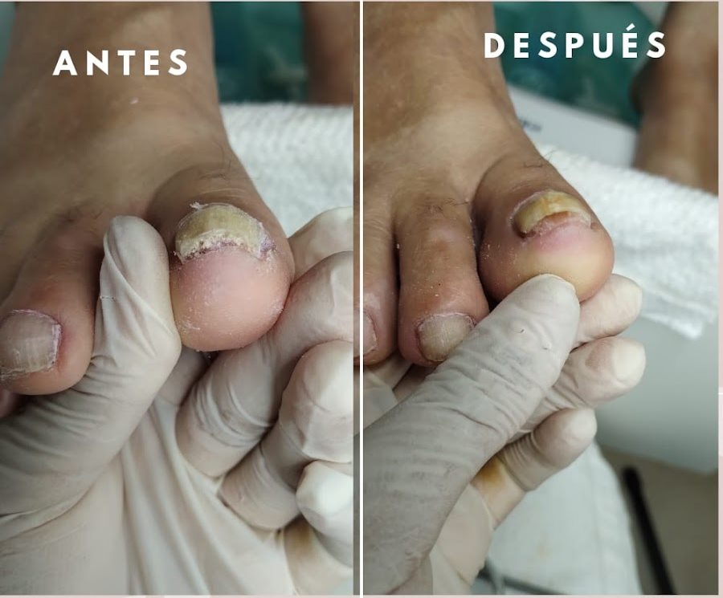
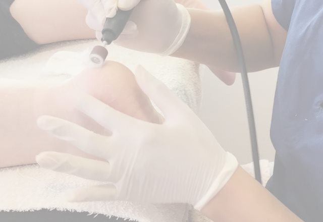
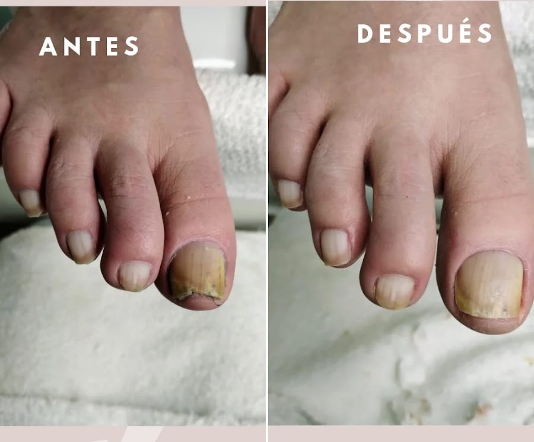
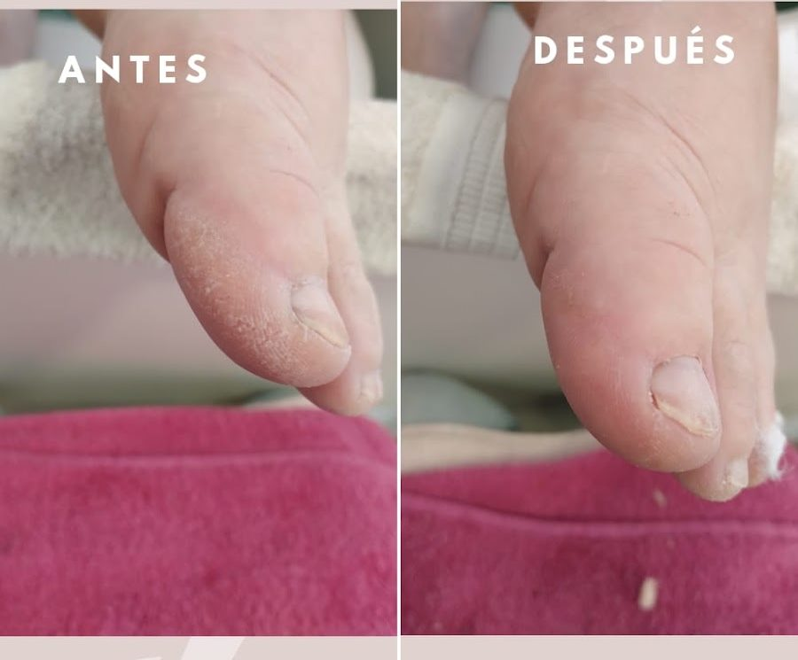

Onicogrifosis
Engrosamiento exagerado de la lámina ungueal. Cambios en la 1ª sesión.
Agendá tu turnoAgenda abierta
Mirá cómo se ven los casos que se atienden en el consultorio y agendá tu turno.

Antes y después

Engrosamiento exagerado de la lámina ungueal. Cambios en la 1ª sesión.
Agendá tu turno
Tratamiento de onicomicosis para paciente con diabetes.
Agendá tu turno
Heloma causado por el roce constante del calzado.
Agendá tu turnoFotos y descripciones de casos publicadas por el consultorio en su ficha de Google.
Para pedir turno
Contás qué te molesta en los pies o en las uñas.
Te pasamos los días y horarios disponibles.
Santiago del Estero 477, en Ingeniero Maschwitz.
Cómo llegar y cuándo
Santiago del Estero 477
Ingeniero Maschwitz, Buenos Aires
Atención con turno previo.
| Lunes | 8:00 a 15:30 |
|---|---|
| Martes | 9:00 a 17:00 |
| Miércoles | 8:00 a 17:00 |
| Jueves | 9:00 a 16:00 |
| Viernes | 8:00 a 14:30 |
| Sábado | 13:00 a 18:00 |
| Domingo | Cerrado |
Contanos qué te molesta y coordinamos el día y el horario.
Escribir por WhatsAppLos botones de contacto se activan en la versión oficial.